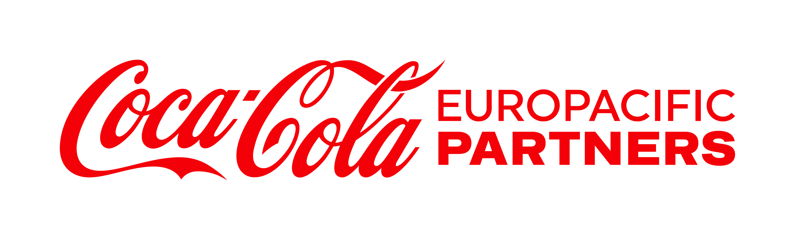

ESCALO TU NEGOCIO
CON SISTEMAS
INTELIGENTES
Diseño e implemento sistemas de automatización, analítica de datos y marketing digital para empresas que buscan el siguiente nivel de eficiencia y facturación.




No soy una agencia más. Soy la persona que se sienta contigo, entiende tu negocio, identifica tus problemas y construye los sistemas que te permiten crecer sin quemarte.
¿Te suena familiar?
Aquí está la solución.
¿Inviertes en marketing y no ves resultados?
- ✕ Tu marca es invisible en redes sociales
- ✕ Publicas contenido pero no atraes clientes de calidad
- ✕ No tienes un plan de marketing para escalar
- ✕ Desconoces qué parte de tu inversión funciona
Adquisición con propósito
No solo buscamos "likes", creamos ecosistemas de venta que convencen y captan clientes de valor para tu negocio. Cada euro de presupuesto, justificado con datos.
¿Tu equipo trabaja en modo manual?
- ✕ Tu equipo pierde horas en tareas repetitivas
- ✕ Los errores humanos te están costando dinero
- ✕ Estás colapsado y no puedes aceptar más trabajo
- ✕ Tus procesos actuales son frágiles y lentos
Negocio en piloto automático
Eliminamos cuellos de botella con procesos IA-driven que permiten escalar el volumen sin contratar personal adicional. Recuperas el control estratégico de tu empresa.
¿Tu web no convierte visitas en clientes?
- ✕ Tu web actual no proyecta tu valor real
- ✕ Pierdes clientes porque la web es lenta o poco atractiva
- ✕ Nadie te contacta a través de tu página
- ✕ Tu competencia ofrece una imagen más moderna
Vendedor de lujo 24/7
Una presencia digital de alto nivel diseñada para que el cliente confíe en ti desde el primer segundo. Tu nueva web trabajará sin descanso para convertir los perfiles más rentables.
¿Tomas decisiones sin datos reales?
- ✕ Tomas decisiones por intuición o miedo
- ✕ Pierdes días enteros creando reportes en Excel
- ✕ No sabes cuánto dinero ganas realmente
- ✕ No mides el retorno real de cada inversión
Control total en tiempo real
Transformamos montañas de datos en dashboards intuitivos que te dicen exactamente qué decisiones tomar hoy para ganar más mañana. Deja de adivinar, empieza a dirigir.

Investigadora en IA.
Estratega de negocio.
Tu aliada para
crecer.
Me apasiona ayudar a las empresas a dejar de trabajar en "modo manual". Mi trayectoria en el mundo de la
investigación, con +8 papers y 367 citas de otros expertos en los últimos 3 años, me ha enseñado que la
verdadera innovación
solo vale la pena si resuelve problemas del mundo real.
Mi enfoque huye de lo convencional. Gracias a mi
formación híbrida en ADE e Ingeniería Computacional, diseño infraestructuras digitales que permiten que tu
negocio sea más
rápido y eficiente. Mi trabajo consiste en transformar datos en rentabilidad, creando sistemas
inteligentes
diseñados para un único fin: que tú recuperes tu tiempo mientras tu facturación crece.
Rigor de datos
Me apoyo puramente en el análisis cuantitativo para no dejar nada al azar. Las corazonadas están bien, pero prefiero tomar decisiones basadas en datos reales.
Visión de negocio
El marketing y las acciones de 'postureo' no va conmigo. Si una acción no trae rentabilidad real a tu negocio, simplemente no la hacemos.
Arquitecta de sistemas
Construyo sistemas que hacen el trabajo pesado en piloto automático. Así te liberas del día a día y puedes dedicar tu tiempo a lo que de verdad hace avanzar tu negocio.
Visión Estratégica.
Ingeniería de Resultados.
Estrategia Visual — Centro de Estética
Identidad visual premium diseñada para transmitir exclusividad y confianza, atrayendo a clientes de alto valor adquisitivo y aumentando la recurrencia.

Simple. Claro. Sin sorpresas.
Diagnóstico
Llamada de 45 min para entender tu negocio, tus cuellos de botella y dónde está el dinero que se escapa.
Estrategia
Propuesta personalizada con hoja de ruta clara, métricas de éxito y timeline realista. Sin humo.
Ejecución
Construyo, implemento y pruebo. Tú ves el progreso en tiempo real, sin tecnicismos innecesarios.
Resultados & Soporte
Lanzamos, medimos y optimizamos. Soporte activo los primeros meses para asegurar el impacto.
¿Listo para el siguiente nivel?
Solo trabajo con 2 proyectos nuevos al mes para garantizar atención total. Si estás leyendo esto, hay una plaza disponible.